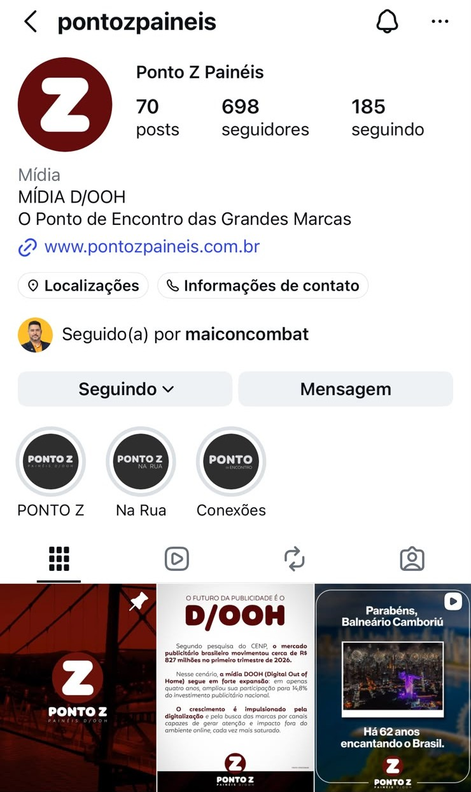
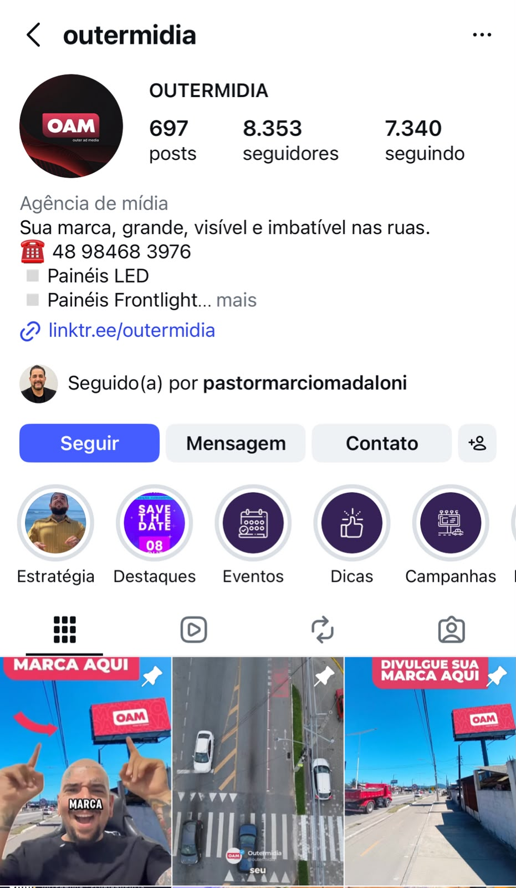
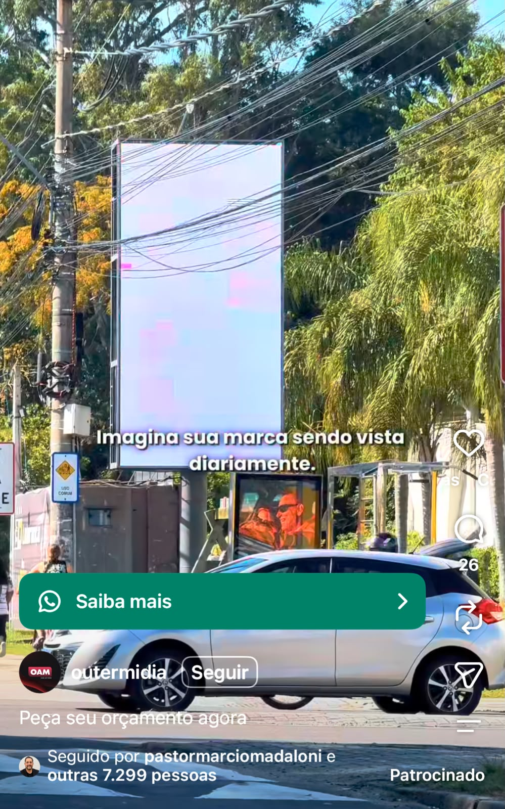
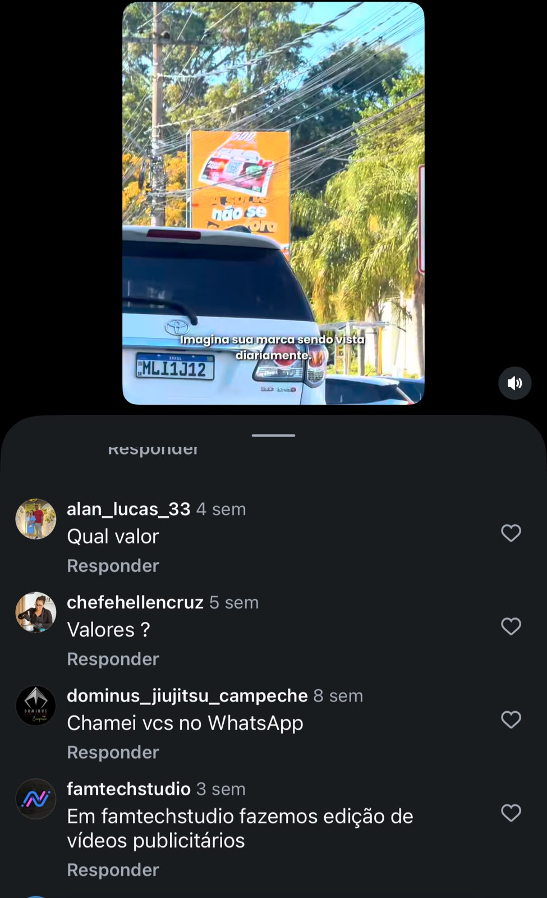
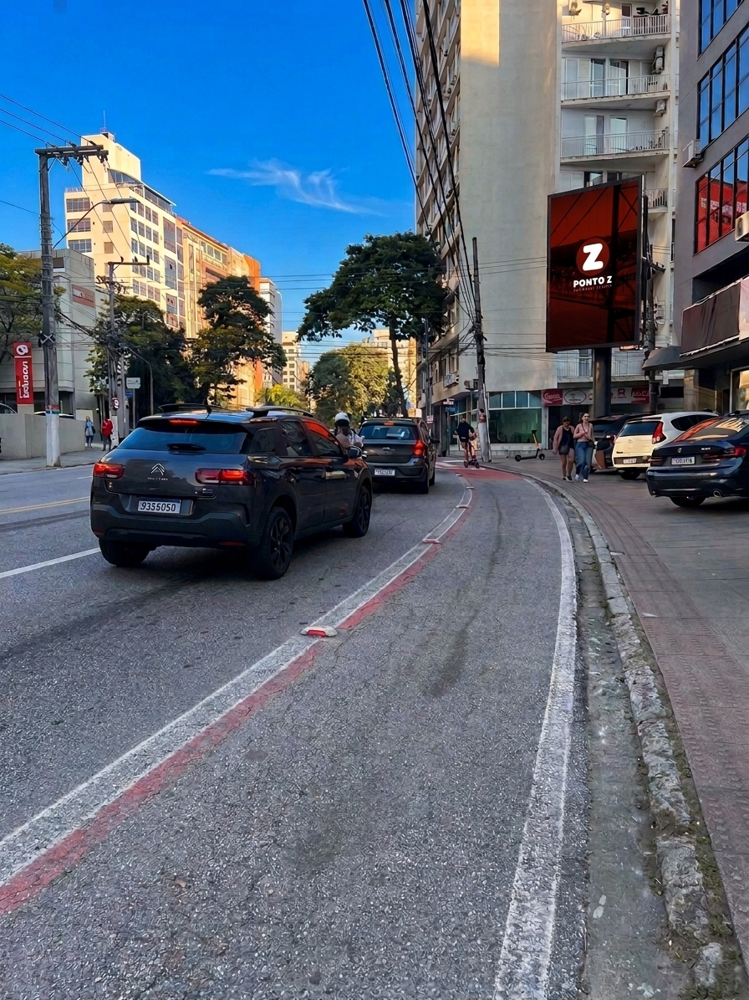

O que a Qincrível oferece pra Ponto Z
A Ponto Z é referência em mídia exterior em Santa Catarina. Veja o cenário que motivou essa proposta:
A autoridade que existe na rua ainda não existe no Instagram
O perfil @pontozpaineis já tem 70 posts publicados, mas apenas 698 seguidores, número modesto pra quem é referência física no segmento em Santa Catarina.

70 posts, 698 seguidores, 185 seguindo. Pra uma empresa que é referência há anos no mercado, isso deveria ser muito maior. Falta postar com uma estratégia de crescimento que realmente converte.
77% dos brasileiros pesquisam marcas nas redes sociais antes de fechar negócio (Ipsos). No caso específico do Instagram, o canal responde por 75% das pesquisas de produto/serviço e 55% das compras acontecem depois dessa checagem (E-commerce Trends 2026, Octadesk e Opinion Box). Ou seja: quando um anunciante em potencial pesquisa a Ponto Z antes de fechar contrato, o que ele encontra hoje não reflete a liderança real da empresa no mercado físico.
Fontes: Ipsos (via Times Brasil/CNBC), Octadesk & Opinion Box, E-commerce Trends 2026.
Um concorrente direto já está 10x na frente no digital
A Outermidia (@outermidia), agência de painéis de LED e frontlight no mesmo segmento da Ponto Z, tem 697 posts e 8.353 seguidores. A Ponto Z tem 70 posts e 698 seguidores.



A mídia exterior movimentou R$827,1 milhões no 1º trimestre de 2026, crescimento de 48,6% frente ao mesmo período de 2025. Nos últimos 4 anos, o setor mais que dobrou de tamanho (+132,3%). A participação do OOH no bolo publicitário monitorado pelo Cenp saltou de 10,3% para 14,8%. E 71% das empresas do setor planejam ampliar investimento em mídia digital exterior (IAB Brasil/Galaxies), ou seja, mais concorrentes como a Outermidia estão a caminho.
Fontes: perfil público @outermidia (13/09/2026), Cenp via Adnews, IAB Brasil & Galaxies.
Falta de tempo é o padrão do mercado, não desculpa da Ponto Z
O gargalo que trava o conteúdo da Ponto Z é o mesmo que trava a imensa maioria dos negócios locais no Brasil.
Ser referência de verdade na rua não vale nada se ninguém souber disso no digital. Quem não é visto, não é lembrado. E quem não é lembrado, não é chamado na hora de fechar negócio.
31% das pequenas empresas dizem não ter tempo suficiente pra postar com regularidade, e 38% relatam dificuldade pra ter ideias de conteúdo interessantes (pesquisa GoDaddy). Ainda assim, 70% dos pequenos negócios já têm perfil nas redes. O problema não é começar, é sustentar o ritmo sem tirar tempo de quem toca a operação.
É exatamente esse o ponto do Founder-Led Growth: a Qincrível chega com o roteiro pronto, faz a captação e a edição. Sobra pro Marcelo só aparecer no momento certo, sem gastar tempo planejando o que gravar.
Fonte: pesquisa GoDaddy sobre pequenas empresas e redes sociais.
De uma foto para uma cena de cinema
Partimos de uma foto real de um ponto de vocês e geramos o movimento completo: o ponto de vista atravessa o trânsito da avenida, sobe acima dos carros e fecha no painel, destacando exatamente o que um anunciante quer ver, que é o painel no meio do fluxo real de pessoas.

Uma foto comum da avenida, com o painel da Ponto Z ao fundo. Nenhum equipamento especial, nenhuma captação profissional. É esse o único insumo necessário.
Esse formato não serve só para o Instagram da Ponto Z. Ele também é material de venda: mostrar ao anunciante como o painel dele aparece no fluxo real da via é um argumento muito mais forte do que uma foto estática em um mapa de pontos.
Essa cena faz parte do pacote Founder-Led Growth, que você confere na seção de investimento mais abaixo, junto com os outros dois pacotes que a Qincrível oferece pra Ponto Z: VideoMaker Profissional e Criativos para os Painéis.
Perfil construído do zero, sem impulsionamento
O desafio da Ponto Z é exatamente esse: sair do zero no Instagram e construir presença real. Já fizemos isso. O perfil da Inframe, marca de guestbook de fotos instantâneas, foi construído do zero pela Qincrível, sem nenhum centavo em tráfego pago, e hoje mostra:


Mais exemplos de conteúdo
Além da cena gerada por IA, também vamos até o ponto com um videomaker para criar conteúdo real, ao vivo, no local do painel, captando o movimento, o entorno e a energia que só uma filmagem presencial traz. É a frente certa para lançamentos, eventos ou quando o objetivo pede autenticidade em vez de velocidade.
O painel físico também é uma tela pra divulgar a própria marca
Além de vender espaço publicitário, a Ponto Z pode usar a própria rede de painéis pra se divulgar. Com 39 painéis ativos na Grande Florianópolis, cada ponto já tem um dado real de audiência (o número de impactos mensais daquele local), pronto pra virar argumento visual direto no criativo, tipo "sua marca aparecendo pra mais de 1 milhão de pessoas por mês aqui nessa via".
O que sustenta cada entrega
Os três pacotes (Founder-Led Growth, VideoMaker Profissional e Criativos para os Painéis) compartilham a maior parte destas frentes de qualidade. A única exceção é a clonagem de vídeo e áudio, exclusiva do avatar dentro do Founder-Led Growth. Nenhuma frente funciona isolada: pesquisa sem roteiro vira achismo, roteiro sem edição não prende ninguém.
Tudo que a Qincrível cuida dentro do Founder-Led Growth:
- Captação de conteúdo nas visitas presenciais
- Cena cinematográfica por IA a partir de foto do painel, como demonstrado no exemplo acima (cobrada por vídeo, com limite mensal)
- Clone digital (avatar de IA) do Marcelo
- Bastidores da operação da Ponto Z
- Conteúdo do próprio Marcelo pra gerar autoridade: a Qincrível já leva o roteiro pronto
- Conteúdo de Stories
- Edição completa, com legendas prontas em todo vídeo entregue
- Organização da biografia e dos destaques do perfil
- Postagem de tudo pronto, sem depender de ninguém da Ponto Z pra publicar
- Estratégia de conteúdo pensada pro segmento de mídia exterior
Até 4 visitas presenciais por mês, agendadas no 1º dia útil (remarcáveis por imprevisto).
Tudo que a Qincrível cuida dentro do VideoMaker Profissional:
- Produção profissional de alta qualidade em cada visita
- Cobertura de até 3 painéis por deslocamento, na região da Grande Florianópolis
- 2 vídeos prontos para postagem por painel, totalizando 6 vídeos entregues por diária
- Edição completa em todos os vídeos entregues
- Dados de pesquisa atualizados sobre cada local captado
Sem cobrança de deslocamento dentro da Grande Florianópolis.
Tudo que a Qincrível cuida dentro de Criativos para os Painéis:
- Lote de 5 criativos genéricos e objetivos, prontos pra usar em qualquer painel da rede da Ponto Z
- Criativo customizado com dado de um painel específico (ex: "+ de 1,3 milhões de impactos mensais" daquele ponto) é orçado à parte, avulso
Investimento único pelo lote de 5. Não entra na recorrência mensal. Atualização do lote e criativos avulsos por painel são orçados à parte, quando solicitados.
Perguntas antes de decidir
Dúvidas comuns de quem está vendo essa proposta pela primeira vez.